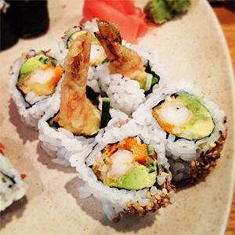
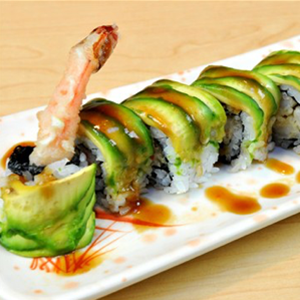
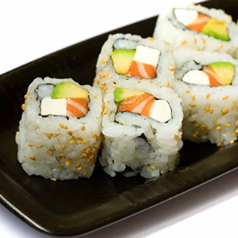
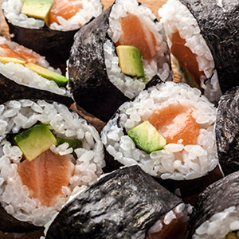
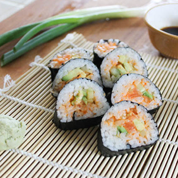

DYNAMITE ROLL
- Maple Soy Sauce:
- 1 Tablespoon, organic maple syrup
- 1 Tablespoon, soy sauce
- Dynamite Sauce:
- 1/2 cup olive oil mayonnaise
- 1 Tablespoon (or more depending on taste) Sriracha hot sauce
- 1/4 Teaspoon roasted sesame oil
- For the Rolls:
- Approx. 1 Cup sushi/sticky rice (cooked per instructions on package)
- Sliced Mango
- Sliced Cucumber
- Sliced Avocado
- 2 Sheets of Nori
- Tempura Shrip

GREEN DRAGON ROLL
- 2 Cups of Prepared Rice
- 4 Sheets of Nori
- 1 Cup of Crab meat
- 1 Cup of Cucumber, shredded
- 1/4 Cup Japanese Mayonnaise
- 1 Tablespoon Thai Sriracha Sauce
- 3 Ounces Ungai (eel)- cut 1/2" wide by 8" long
- 2 Avocados
- 2 Tablespoons Thai Sweet Chili Sauce
- 2 Tablespoons Ungai Sauce
- 2 Tablespoons each, sesame seeds, thinly sliced scallion
- Salt and Pepper

PHILADELPHIA ROLL
- 1 Cup Sushi Rice
- 1 Cup of Water
- 1 Tablespoon seasoned Rice Vinegar
- 1 Sheet of Nori
- 1 1/2 Ounces Smoked Salmon
- 1/2 Cucumber
- 2 Tablespoons of Cream Cheese

SALMON AVOCADO ROLL
- 1 avocado, pitted, peeled and sliced thinly
- 1 tablespoon seasoned rice vinegar or lemon
- 4 sheets of nori (seaweed)
- About 3 cups cooked and cooled sushi rice
- 8 ounces sashimi-grade salmon, cut into 1/2 inch strips
- Pickled Ginger
- Wasabi
- Soy Sauce

SPICY SALMON ROLL
- 1 1/2 Cups of Sushi Rice
- 2 Cups of Water
- 2 Tablespoons Rice Vinegar
- 2 Tablespoons of Sugar
- 1 Tablespoon Kosher Salt
- 4 Sheets of Nori
- 1 Avocado
- 6-inch piece of English Cucumber, peeled and thinly sliced
- 1 Scallion, thinly sliced
- 3 Tablespoons sesame seeds
- 1/2 Pound fresh, Raw Salmon, diced
- 1 Tablespoon Mayonnaise
- 2 Tablespoons Sriracha Chili Sauce
